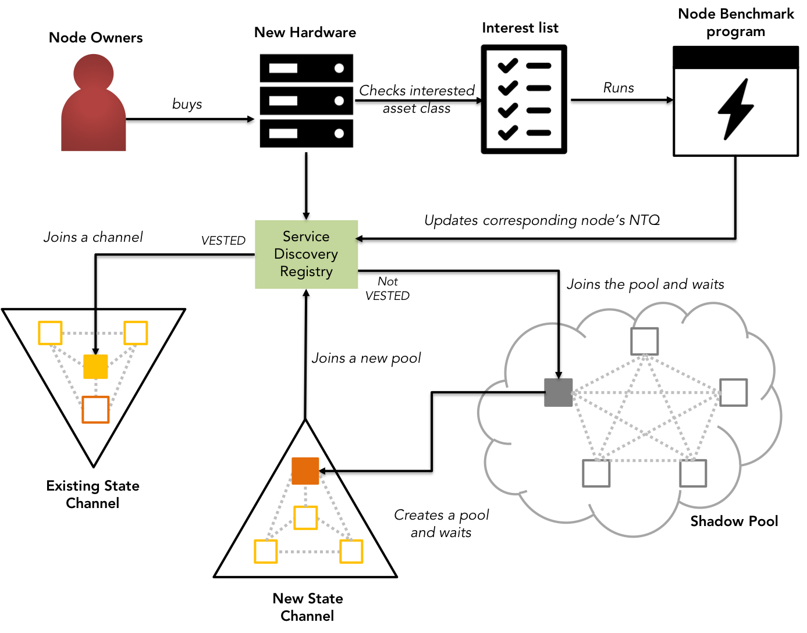
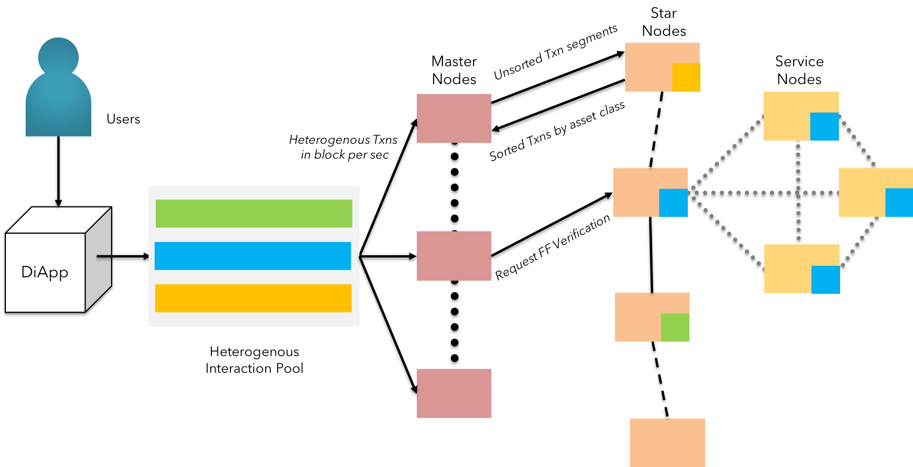
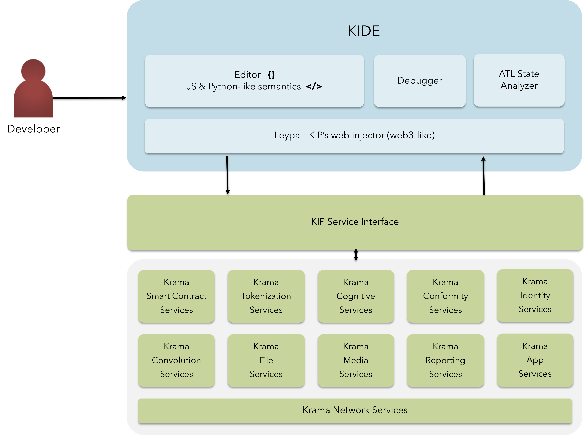
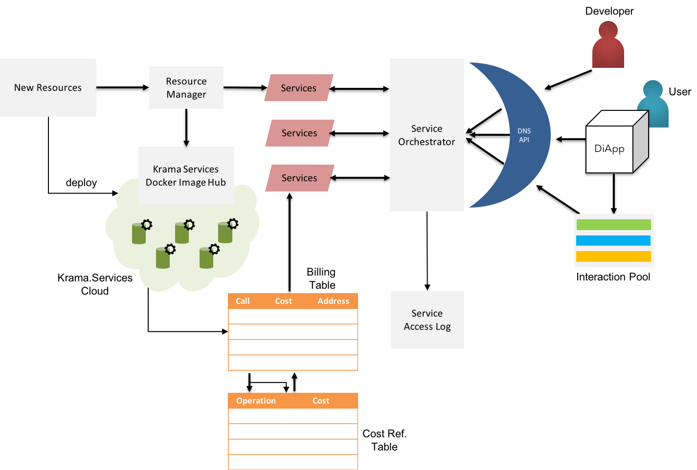
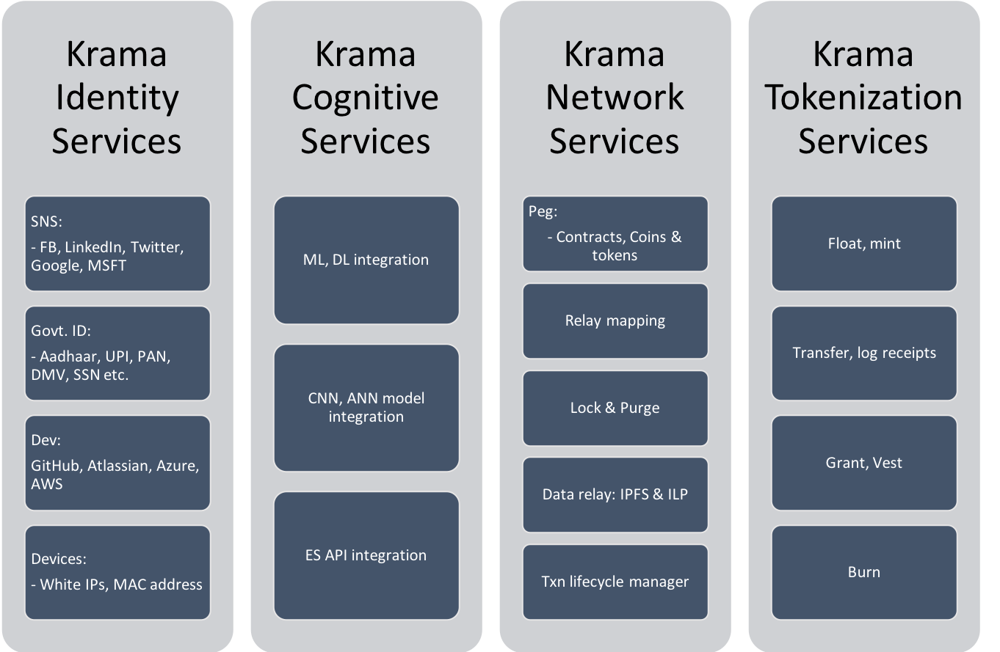
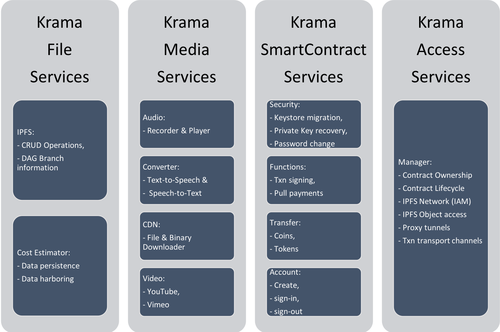
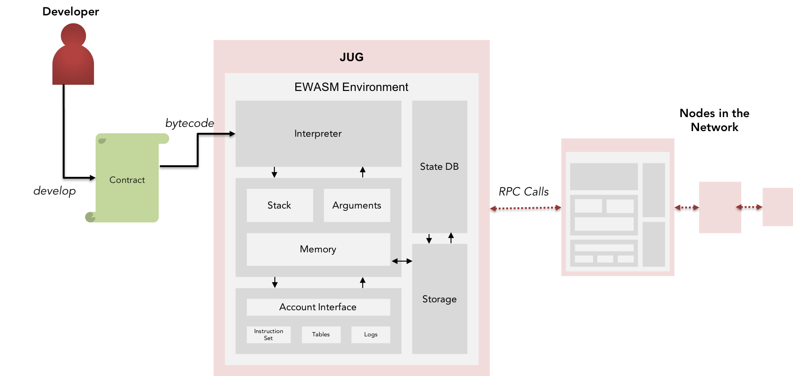
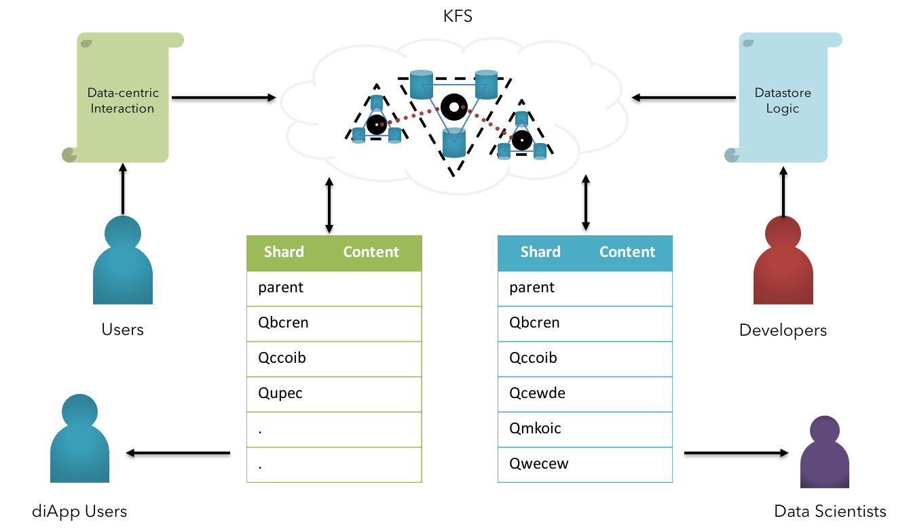
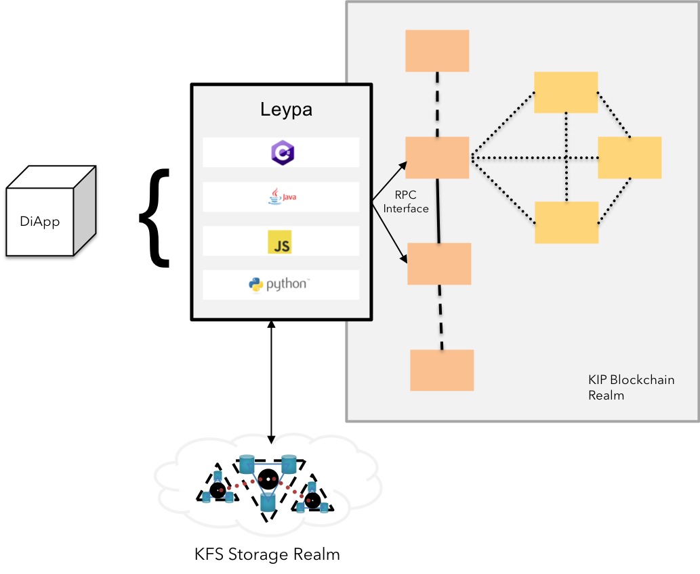

Krama Intelligent Protocol (KIP)
Technical Primer

WORKING DRAFT
Anantha Krishnan (@Arshasays)
Ganesh Prasad Kumble (@KumbleGp)
KIP FOUNDATION
dev@kip.foundation
Abstract
This technical primer aims to deliver technically resourceful information such as the approaches, models, frameworks & design patterns used to develop the KIP network & its underlying services. The paper elaborates on the technical design contrast between existing prominent blockchains, distributed file storage systems & KIP's digital mesh of the 3rd generation blockchain realms, storage realms along with business-front services.
Introduction
Recent trends and innovation in the blockchain & distributed file storage systems has tremendously impacted the landscape of research in distributed systems. More sane & understandable consensus algorithms, node management, optimized file write & retrieval techniques have been churned out in the past few years. However, most of them do not seem to have a great fit with the enterprise ecosystem as the deign rationale behind such innovations were mostly intended for a fully decentralized and transparent world.
KIP resolves this gap by converging Intelligence, Connectedness and Trust (the new ICT!) to create a fundamental digital fabric on which new digital services can be directly built using distributed intelligence.
Existing systems
The third generation of web is comprised of multi-faceted technologies with some of the stacks synonymous to an entire domain. KIP assumes a few stacks in the forefront of development as the source of research for contrast and design resolution.
We observe Ethereum[1] & its forked versions to be at the forefront in Blockchain, whereas Practical Byzantine Fault Tolerant (PBFT)[2] systems & its variants being at the forefront in connecting devices ranging from sensors to servers, and finally, neural networks & convergent expert systems that covers a fair share of gaining artificial intelligence.
Introduction
Recent trends and innovation in the blockchain & distributed file storage systems has tremendously impacted the landscape of research in distributed systems. More sane & understandable consensus algorithms, node management, optimized file write & retrieval techniques have been churned out in the past few years. However, most of them do not seem to have a great fit with the enterprise ecosystem as the deign rationale behind such innovations were mostly intended for a fully decentralized and transparent world.
KIP resolves this gap by converging Intelligence, Connectedness and Trust (the new ICT!) to create a fundamental digital fabric on which new digital services can be directly built using distributed intelligence.
Existing systems
The third generation of web is comprised of multi-faceted technologies with some of the stacks synonymous to an entire domain. KIP assumes a few stacks in the forefront of development as the source of research for contrast and design resolution.
We observe Ethereum[1] & its forked versions to be at the forefront in Blockchain, whereas Practical Byzantine Fault Tolerant (PBFT)[2] systems & its variants being at the forefront in connecting devices ranging from sensors to servers, and finally, neural networks & convergent expert systems that covers a fair share of gaining artificial intelligence.
Proposed System
- We propose a composite system with extended abilities to support better network attributes by approaching existing limitations with sentinel scalability, modulated trust, and actor-based throughput.
- The proposed system extends the value measuring capabilities in a blockchain-alike transactional environment with Total Digital Utility(TDU) scores.
- Also, the economical uncertainty in performing transactions on the blockchain is addressed by the method of stable gas costing mechanism.
We discuss each of approaches here in detail:
Sentinel Scalability
KIP leverages TARA(Ternary Augmented Raft Architecture)[3], an enhanced version of RAFT[4] algorithm, for high-frequency consensus, simplified service discovery & dynamic node management.
TARA provides multi-faceted abilities to manage a network of distributed systems by managing nodes in a graph format. Analogous to vertices connected acyclically by drawing edges in a graph, nodes are connected by an RPC(Remote Procedure Call)[5] connection between them. The RPC connections establish a network in a hybrid manner.
Each node in the KIP system is defined in the following structure:
type Node struct {
state NodeState // Whether an Orphan, Follower, Candidate OR a Leader
role NodeRole // Whether is under service, star or master subnet
eventmux *event.TypeMux // Event multiplexer used between the services of a stack
config *Config
accman *accounts.Manager
ephemeralKeystore string // if non-empty, the key directory that will be removed by Stop
instanceDirLock flock.Releaser // prevents concurrent use of instance directory
serverConfig p2p.Config
server *p2p.Server // Currently running P2P networking layer
serviceFuncs []ServiceConstructor // Service constructors (in dependency order)
services map[reflect.Type]Service // Currently running services
rpcAPIs []rpc.API // List of APIs currently provided by the node
inprocHandler *rpc.Server // In-process RPC request handler to process the API requests
ipcEndpoint string // IPC endpoint to listen at (empty = IPC disabled)
ipcListener net.Listener // IPC RPC listener socket to serve API requests
ipcHandler *rpc.Server // IPC RPC request handler to process the API requests
httpEndpoint string // HTTP endpoint (interface + port) to listen at (empty = HTTP disabled)
httpWhitelist []string // HTTP RPC modules to allow through this endpoint
httpListener net.Listener // HTTP RPC listener socket to server API requests
httpHandler *rpc.Server // HTTP RPC request handler to process the API requests
wsEndpoint string // Websocket endpoint (interface + port) to listen at (empty = websocket disabled)
wsListener net.Listener // Websocket RPC listener socket to server API requests
wsHandler *rpc.Server // Websocket RPC request handler to process the API requests
stop chan struct{} // Channel to wait for termination notifications
lock sync.RWMutex
}
wherein the state and mode attributes are enumerated as follows:
type NodeState int32
const (
ORPHAN NodeState = 0
FOLLOWER NodeState = 1
CANDIDATE NodeState = 2
LEADER NodeState = 3
)
var NodeStateMap map[common.Hash]uint
type NodeRole int32
const (
IDLE_ROLE NodeMode = 0
SERVICE_ROLE NodeMode = 1
STAR_ROLE NodeMode = 2
GRAND_ROLE NodeMode = 3
)
var NodeRoleMap map[common.Hash]uint
TARA, based on PBFT hardened RAFT facilitates the network with addition and removal of nodes in a dynamic manner. A formal specifications for the same here:
func ParseNode(string enodeURL) {
// Parse node info by its enode:/// URL
}
func addPeer(Node node) {
// Add the peer into a specific network
}
func (n *Node) setPeerRole() error {
// Update the status of the node under its type definition
}
func (n *Node) getPeerRole() error {
// Get the current role of the specified node by its type definition
}
func removePeer(Node node) {
// Remove the node from the specified network & revoke all access
}
TARA leverages raftpb[6] - The Protobuf[7] implementation for RAFT from CoreOS' etcd[8] package to manage & broadcast network level changes due to addition or removal of peers.

Fig 1: KIP - Sentinel Scalability and node management with NTQ
KIP's approach to achieving sentinel scalability is by observing the interest of the new nodes joining the network, hosted by interested parties called verifiers. Each node is vetted for reliability & commercial viability by a benchmarking program that receives the above mentioned interests as input from the owners of the node.
KIP's node benchmark program calculates the reliability based on 2 criteria:
-
Hardware specifications:
The program collects the host's following hardware information:- CPU's architecture,
- Number of CPU(s),
- Thread(s) per core,
- CPU's frequency,
- MIPS,
- Total cache size,
- Total main memory,
- Available space in the reserved partition,
- OS type & version, and
- Kernel build
The collected attribute values are aggregated to find the mean score, upon which the node is declared valid under a tier or vice-versa.
$$ \Delta $$
- Network Specifications:
The benchmark programs then communicates with the node by sending a specific number of arbitrary messages in an encapsulated virtual network to calculate the responsive potential of the node. The measured throughput is compared with the average throughput of all the nodes in the network.
$$ \Delta $$
- Interest Verification:
The benchmark program also keeps track of the transactions verified by the node for a brief period of time. The monitoring is kept under observation to reserve the interest of the new node in the network & to eliminate bad actor interests from the network. The aggregate of number of transactions dropped over the time observed is compared for shaping the Node Trust Quotient (NTQ) in full.
$$ \Delta $$
Upon passing the specification tests, the eligible nodes joining the KIP network is considered "orphan" role with only an ability to become a member of the shadow pool verifying shadow broadcasts, until the KIP's network orchestrator adds the peer into a state channel. Once the node is added into a state channel, the node is assigned the "Follower" role & hence entitled to verify the transactions passed on to its state channels. However, all follower nodes belonging to arbitrary state channels are also responsible for verifying the transactions propagated in the shadow broadcasts shared by the grand leader.
Node Lifecycle - Formal Notation:
STEP 1: Initiate a
Nodeinstance withknode://urlSTEP 2: Add the peer into the relevant state channels with
addPeer(node)STEP 3: Acknowledge the addition of the node with
chainExtensionMessageSTEP 4: Node verifies the transactions propagated from both Fast Follow & Shadow Broadcast
STEP 5: Node vests a finite number of KIP tokens & performs its duties for at least minimum duration to contend in the election of star leader
STEP 6: Leadership is transferred to the candidate node with majority votes & shared across the network with
ProposeConfChange()STEP 7: The new star leader receives the transactions passed by the classifier from master nodes & maintains leadership by sharing the heartbeat to all following service nodes in the state channels
STEP 8: Star nodes vest an extra number of KIP tokens to contend in the elections for Grand Nodes & changes to the network leadership is again broadcasted across the network
STEP 8: The election occurs again in case of time-out from the leaders at all levels
STEP 9: Nodes are removed due to malicious attempts or cause of faults with
removePeer(node)STEP 10: The network changes are broadcasted & process repeats
Every successful modification to the network will be ratified by the chainExtensionMessage - a network update heartbeat sent across to all the nodes in the pertaining network by its leader.
Proposed System
- We propose a composite system with extended abilities to support better network attributes by approaching existing limitations with sentinel scalability, modulated trust, and actor-based throughput.
- The proposed system extends the value measuring capabilities in a blockchain-alike transactional environment with Total Digital Utility(TDU) scores.
- Also, the economical uncertainty in performing transactions on the blockchain is addressed by the method of stable gas costing mechanism.
We discuss each of approaches here in detail:
Sentinel Scalability
KIP leverages TARA(Ternary Augmented Raft Architecture)[3], an enhanced version of RAFT[4] algorithm, for high-frequency consensus, simplified service discovery & dynamic node management.
TARA provides multi-faceted abilities to manage a network of distributed systems by managing nodes in a graph format. Analogous to vertices connected acyclically by drawing edges in a graph, nodes are connected by an RPC(Remote Procedure Call)[5] connection between them. The RPC connections establish a network in a hybrid manner.
Each node in the KIP system is defined in the following structure:
type Node struct {
state NodeState // Whether an Orphan, Follower, Candidate OR a Leader
role NodeRole // Whether is under service, star or master subnet
eventmux *event.TypeMux // Event multiplexer used between the services of a stack
config *Config
accman *accounts.Manager
ephemeralKeystore string // if non-empty, the key directory that will be removed by Stop
instanceDirLock flock.Releaser // prevents concurrent use of instance directory
serverConfig p2p.Config
server *p2p.Server // Currently running P2P networking layer
serviceFuncs []ServiceConstructor // Service constructors (in dependency order)
services map[reflect.Type]Service // Currently running services
rpcAPIs []rpc.API // List of APIs currently provided by the node
inprocHandler *rpc.Server // In-process RPC request handler to process the API requests
ipcEndpoint string // IPC endpoint to listen at (empty = IPC disabled)
ipcListener net.Listener // IPC RPC listener socket to serve API requests
ipcHandler *rpc.Server // IPC RPC request handler to process the API requests
httpEndpoint string // HTTP endpoint (interface + port) to listen at (empty = HTTP disabled)
httpWhitelist []string // HTTP RPC modules to allow through this endpoint
httpListener net.Listener // HTTP RPC listener socket to server API requests
httpHandler *rpc.Server // HTTP RPC request handler to process the API requests
wsEndpoint string // Websocket endpoint (interface + port) to listen at (empty = websocket disabled)
wsListener net.Listener // Websocket RPC listener socket to server API requests
wsHandler *rpc.Server // Websocket RPC request handler to process the API requests
stop chan struct{} // Channel to wait for termination notifications
lock sync.RWMutex
}
wherein the state and mode attributes are enumerated as follows:
type NodeState int32
const (
ORPHAN NodeState = 0
FOLLOWER NodeState = 1
CANDIDATE NodeState = 2
LEADER NodeState = 3
)
var NodeStateMap map[common.Hash]uint
type NodeRole int32
const (
IDLE_ROLE NodeMode = 0
SERVICE_ROLE NodeMode = 1
STAR_ROLE NodeMode = 2
GRAND_ROLE NodeMode = 3
)
var NodeRoleMap map[common.Hash]uint
TARA, based on PBFT hardened RAFT facilitates the network with addition and removal of nodes in a dynamic manner. A formal specifications for the same here:
func ParseNode(string enodeURL) {
// Parse node info by its enode:/// URL
}
func addPeer(Node node) {
// Add the peer into a specific network
}
func (n *Node) setPeerRole() error {
// Update the status of the node under its type definition
}
func (n *Node) getPeerRole() error {
// Get the current role of the specified node by its type definition
}
func removePeer(Node node) {
// Remove the node from the specified network & revoke all access
}
TARA leverages raftpb[6] - The Protobuf[7] implementation for RAFT from CoreOS' etcd[8] package to manage & broadcast network level changes due to addition or removal of peers.
Fig 1: KIP - Sentinel Scalability and node management with NTQ
KIP's approach to achieving sentinel scalability is by observing the interest of the new nodes joining the network, hosted by interested parties called verifiers. Each node is vetted for reliability & commercial viability by a benchmarking program that receives the above mentioned interests as input from the owners of the node.
KIP's node benchmark program calculates the reliability based on 2 criteria:
-
Hardware specifications:
The program collects the host's following hardware information:- CPU's architecture,
- Number of CPU(s),
- Thread(s) per core,
- CPU's frequency,
- MIPS,
- Total cache size,
- Total main memory,
- Available space in the reserved partition,
- OS type & version, and
- Kernel build
The collected attribute values are aggregated to find the mean score, upon which the node is declared valid under a tier or vice-versa.
$$ \Delta $$
- Network Specifications:
The benchmark programs then communicates with the node by sending a specific number of arbitrary messages in an encapsulated virtual network to calculate the responsive potential of the node. The measured throughput is compared with the average throughput of all the nodes in the network.
$$ \Delta $$
- Interest Verification:
The benchmark program also keeps track of the transactions verified by the node for a brief period of time. The monitoring is kept under observation to reserve the interest of the new node in the network & to eliminate bad actor interests from the network. The aggregate of number of transactions dropped over the time observed is compared for shaping the Node Trust Quotient (NTQ) in full.
$$ \Delta $$
Upon passing the specification tests, the eligible nodes joining the KIP network is considered "orphan" role with only an ability to become a member of the shadow pool verifying shadow broadcasts, until the KIP's network orchestrator adds the peer into a state channel. Once the node is added into a state channel, the node is assigned the "Follower" role & hence entitled to verify the transactions passed on to its state channels. However, all follower nodes belonging to arbitrary state channels are also responsible for verifying the transactions propagated in the shadow broadcasts shared by the grand leader.
Node Lifecycle - Formal Notation:
STEP 1: Initiate a
Nodeinstance withknode://urlSTEP 2: Add the peer into the relevant state channels with
addPeer(node)STEP 3: Acknowledge the addition of the node with
chainExtensionMessageSTEP 4: Node verifies the transactions propagated from both Fast Follow & Shadow Broadcast
STEP 5: Node vests a finite number of KIP tokens & performs its duties for at least minimum duration to contend in the election of star leader
STEP 6: Leadership is transferred to the candidate node with majority votes & shared across the network with
ProposeConfChange()STEP 7: The new star leader receives the transactions passed by the classifier from master nodes & maintains leadership by sharing the heartbeat to all following service nodes in the state channels
STEP 8: Star nodes vest an extra number of KIP tokens to contend in the elections for Grand Nodes & changes to the network leadership is again broadcasted across the network
STEP 8: The election occurs again in case of time-out from the leaders at all levels
STEP 9: Nodes are removed due to malicious attempts or cause of faults with
removePeer(node)STEP 10: The network changes are broadcasted & process repeats
Every successful modification to the network will be ratified by the chainExtensionMessage - a network update heartbeat sent across to all the nodes in the pertaining network by its leader.
Modulated Trust
KIP leverages the concept of selective hearing[9] in the network to facilitate modulated trust. The concept of state channels presented in this paper is different from the concepts used by the ethereum & other blockchain networks to address throughput. Selective hearing in distributed computing network is a well-practiced to address the interest of a sub set of nodes responsible for persisting / operating the relevant information.
Similarly, enterprise stakeholders in a heterogenous business network operate to persist transactional information that favours their respective success. The "single floor communication" philosophy adopted by blockchain has been observed as a challenge, to differentiate priorities between verifying transactions pertaining to lower & relatively higher asset values.

Fig 2: KIP - Modulated Trust & NTQ-based state channel approach
KIP maintains the credibility of the verifying nodes by aggregating the performance & behavior of the nodes and attributing it to NTQ - Node Trust Quotient. Each new node added into the KIP network is automatically assigned the role of an orphan. The node is vetted by requesting for vesting a finite number of KIP Tokens as well as uptime to confirm transactions of sorts in the shadow pool for a finite period of time.
As the node gets attributed with sufficient NTQ scores, the network's distributed intelligence will allocate the node to suitable state channels.
The network-level definition of a node is as follows:
// Node represents a host on the network.
// The fields of Node may not be modified.
type Node struct {
IP net.IP // len 4 for IPv4 or 16 for IPv6
UDP, TCP uint16 // port numbers
ID NodeID // the node's public key
RaftPort uint16
// This is a cached copy of sha3(ID) which is used for node
// distance calculations. This is part of Node in order to make it
// possible to write tests that need a node at a certain distance.
// In those tests, the content of sha will not actually correspond
// with ID.
sha common.Hash
// whether this node is currently being pinged in order to replace
// it in a bucket
contested bool
}
var NodeRoleMap map[common.Hash]uint
var NodeStateMap map[common.Hash]uint
where, the NodeStateMap and NodeRoleMap are dynamic mappings used to refer to the nature of the nodes by the sha3[10] of their Node ID. The mappings are instrumental in identifying the nature of nodes during DHT lookups[11].
The decision to route the transport of information is made based on the Kademlia's[12] bucket lookups. In KIP network, nodes are required to persist three k-buckets with each bucket's size limiting to, but not limited to 16 with a concurrency factor of 3, to facilitate operations across all buckets corresponding to lookups among Master Nodes, Star Nodes & Service Nodes respectively.
Distance between the target is compared as followed:
// distcmp compares the distances a->target and b->target.
// Returns -1 if a is closer to target, 1 if b is closer to target
// and 0 if they are equal.
func distcmp(target, a, b common.Hash) int {
if(NodeRoleMap[target] == NodeRoleMap[a] == NodeRoleMap[b])
{
for i := range target {
da := a[i] ^ target[i]
db := b[i] ^ target[i]
if da > db {
return 1
} else if da < db {
return -1
}
}
return 0
}
}
distcmp ensures to route transactional information only to nodes belonging to the same level of participation.
KIP offers a method of differentiation in prioritizing the transactions by facilitating the diApp run by businesses to form a consortium of nodes represented by its important stakeholders.
KIP State Channel - Formal Notation:
STEP 1: Interested peers of a particular asset class run the Node (The Peer of the state channel)
STEP 2: Node is added into the state channel by
addPeer(node, StateChannelID), according to the interest specified during benchmark. This is the "Follower Node".STEP 3: Peers of the state channel vote & elect a judge node, run by regulators & compliance practitioners, to distribute asset-specific transactions & confirm the validation from peers. This is the "Star Node"
STEP 4: Signed transactions are formally verified by the peers of the state channel & confirmed by the leader (star node). This is "Fast Forwarding".
STEP 5: The confirmed transactions are propagated by the star node of the current state channel to those of other state channels followed by the idle orphans in the the shadow pool
STEP 6: The star nodes receive the fast forwarded transactions & broadcast them to the peers of their respective state channels. Follower peers observe the verification by appending them into their Tx Log
STEP 7: The idle orphans also receive the fast forwarded transactions & observe the verification by appending them into the Tx Log
STEP 8: STEP 6 & STEP 7 collectively forms "Shadow Broadcasting". Blocks are produced by packaging the transactions & height of the network is updated to the latest upon broadcast confirmation
$$ Total Hops = { \iota( \iota - 1 ) } + { s( s - 1 ) }\\ O(n^2) $$
Throughput
KIP facilitates high frequency enterprise operations by leveraging the reactive actor streams[13] offered by TARA. Reactive streams are based on the concept of deadlock-free "execute-only-once" ordering[14].
The state channels hosted by the grand nodes & star nodes are facilitated by an actor concurrency model consisting of hybrid mutex & chan spaces across the network. This hybrid structure allows us to achieve concurrency without tradeoffs at the JUG(EVM[15]-like) on blocking calls needed to perform function calls. However, each node belonging to respective state channel is a member of a subset of a super-set channel, thereby maintaining systemic information on the wallets & smart contracts.

Fig 3: KIP - Actor-based throughput model with reactive streams
$$ \Delta $$
Each actor across the KIP's Grand-Star network uses message passing to classify & funnel the stream of transactions to respective state channels, in a purely asynchronous manner. Each transaction transmitted by diApps (technically clients) to any one of the grand nodes in the KIP network is considered as a message. The incoming message is timestamped (client-level) & payload is assigned a metadata tag based on the function responsible for the RPC / API call.
Throughput - Formal Notation:
STEP 1: The p2p connection established between the Grand Nodes and the Star Nodes form the "Orderer Network"
STEP 2: One or more grand nodes receive transaction requests from the clients (diApps). The incoming transactions (in the range of millions) are partitioned between the grand nodes.
STEP 3: The partitioned transactions received by the controller (grand node) are segmented and assigned to the participating actors(star nodes) for classification, based on the nature of transaction captured by the function call's metadata
STEP 4: The star nodes are assigned unique transactions to ensure "execute-only-once" by design. Star nodes perform the classification based on the metadata received and the validity of payload
STEP 5: The ordered classification is returned back to the controller (the calling grand node)
STEP 6: The grand nodes upon receiving the result, propagates the ordered transactions to respective state channels for fast forward verification
STEP 7: If any actor is unable to perform the assigned task of classification, the task is forwarded to a fellow actor available at the earliest.
$$ \Delta $$
Stable gas cost
In the interest of long-lasting adoption & predictable TCO(Total Cost of Ownership), KIP promotes the concept of stable gas cost to balance the economics of using the platform resources. This is made possible by the concept of weighted volatility management.

Fig 4: KIP - Macro view of Gas Cost Stabilization
$$ \Delta $$
Node Benchmark program in each on-boarding node uses Pricing API to fetch updated prices of compute, memory, storage & bandwidth units from respective infrastructure service providers. In case of on-premise resources used by a sub-set of nodes, KIP members are entitled to govern a benchmark program that could closely predict the cost to performance ratio & propagate the output in parallel to information fetched by the oracles mentioned above. The cost aggregator is applied on the obtained array of variate costs, ensuring no loss covered by owner running the nodes with cost in the maxima region of the cost distribution.

Fig 5: KIP - Fair Market Value of Infrastructure Cost & Verification Costs
Aggregated cost is calculated based on the tier of hardware independent of the cloud service provider, to ensure covering loss gap for node operators in the maxima region. The new calculated costs are propagated to the network for approval by node operators in the respective tiers. The voting diApp termed as Tier Cost Contracts is used by the vested node operators to update the costs upon the approval by majority of eligible node operators. The new costs are made effective within a specific epoch, which is again subjected to voting by the same.

Fig 6: KIP - On-chain KIP Token Price Discovery
KIP also exhibits an extensive ability to record the economic value of exchange transactions for KIPs paired directly with a decentralized virtual currency such as the Dai(A decentralized stablecoin on Ethereum)[16], or paired indirectly with other cryptocurrencies available for trade. The objective is to derive at a weighted average value of KIP vs. a stablecoin pegged to a major reserve such as the US Dollar for balancing the associated costs. The average shall be weighted against the Dai/KIP ratio and reset by new values on announcement of new epochs, as voted by vetted KIP holders & node managers.
The cost to performance ratio calculated by the benchmark program is recorded in a transparent index maintained by respective nodes. The ratio for each OPCODE class is aggregated based on the tier & the global lookup index is updated each time a finite set of new nodes are added or removed belonging to the specified tier for an epoch.
The GasTables for each OPCODE & mathematical functions are also maintained in the form of an index.

Fig 7: KIP - Internal view of volatility management in gas costs
The gas cost balancer comprises of a self-balancing utilitarian formula which compares the estimated gas required with the computational cost to execute the same in the specified tier and variates the gasPrice to match the total of verification price to achieve finality among all n nodes.
Gas Cost Balancer - Formal Notation:
STEP 1: Node Benchmark program simulates the execution of each OPCODE & convert the gas units into infrastructure costs (sum of the cost of facilitating CPU time, memory, storage & bandwidth)
STEP 2: The calculated infrastructure costs are reverse converted to equivalent native tokens
STEP 3: The gas cost of the calling functions & variables in the smart contract is calculated by the interpreter by the number of gas units.
STEP 4: Gas Price per gas unit is varied to balance the total gas cost per Txn per node
STEP 5: The gas cost to achieve consensus throughout the network is calculated by sum of gas cost of Txn per Fast Follower node & the gas cost of Txn per Shadow Broadcast node.
STEP 6: The fee (total gas cost) is paid by the user in fractions of KIP token.
STEP 7: The fee is embedded in the transaction payload along with the nonce & timestamp
STEP 8: The transaction is ordered, verified & finally confirmed over a number of epochs
STEP 9: The client is notified of the Txn verification & state changed as per the UX defined
$$ \Delta $$
There is an extremely minimal chance of nodes rejecting the formal verification of the propagated Txns as the incentives needed are fulfilled as specified by the node operators during the bootstrap & consequent voting.
TDU - Total Digital Utility
KIP's wallet is enhanced with an addition of new attribute - TDU, a new mechanism with a collective measure of values, in high frequency transactional environment.

Fig 8: TDU - value capture mechanism with interaction vectors
$$ \Delta $$
Blockchains could not only be used to secure integrity and achieve transparency, but also harness the intents to create values. Although a few blockchain platforms offer the means to capture and relay the transactional metadata, the mechanisms to aggregate and refer to the same in an ubiquitous manner is seldom practised.
KIP introduces the TDU factor by leveraging the application of Interaction vectors - the hybrid information vectors setup to source the background of a given transaction. A commercial transaction to purchase goods/service online can be motivated by several factors. The level of transparency introduced by the blockchain enables the information vectors to be categorized into 3 basic categories:
-
Identity vectors: This is a fundamental vector used to identifying the KIP wallet account responsible for the transaction. In both cases of either a PUSH or PULL transaction, the sender & the recipient address are attributed to
fromandtokeys respectively. The from & to attributes can be of any nature - managed by an individual owner OR a smart contract managed by external users. -
Causal vectors: This fundamental vector is used to capture the intent behind a transaction. The attribution of the reason or the cause to initiate a purchase transaction of commodity, relative to a timeline in efforts, could be of incremental value to enterprises. The circumstances influencing the decision to initiate the transaction is attributed in the causal vector & hence the content is fairly dynamic.
-
Method vectors: This fundamental vector is a continuation to the efforts of the causal vectors. Each transaction propagated in the KIP network is a payload attributed with timestamp, nonce, fee & associated asset class at any given time. The means to achieve the fulfillment & finality of the transactions are the typical attributes of this vector. The conditions influencing the decision to initiate the transaction is attributed in the causal vector & hence the content is fairly dynamic.

Fig 9: TDU - Persistence of multi-dimensional value
$$ \Delta $$
The values captured by the above type of vectors are attributed in a microscopic JSON-like documents, structured and stored in a fully decentralized database (such as Redis, Riak etc.).
The microscopic attributes are aggregated by account type & id, at the end of specified number of epochs.
TDU - Formal Notation:
STEP 1: User initiates a transaction with an intent to purchase a good or consume service.
STEP 2: The transaction is generated once signed by the user's private key along with sender & recipient address, attributed to
fromandtoof the identity vectors.STEP 3: The causal vectors are attributed with the behavioral patterns captured by the diApp, before and after the transaction has been signed by the user.
STEP 4: The payload attributes such as
timestamp,nonce,payload length,fee,tieretc. are captured into the method vectors when the signed transaction is transported from the diApp to the network's transaction pool.STEP 5: The network-level dynamics subjected to fulfil and finalize the given transaction is recorded until the epoch of confirmation expires.
STEP 6: Each set of capture pertaining to the concerned user accounts are aggregated by their wallet address. This set is called a "Burst".
STEP 7: The bursts are then passed as an input to stored procedures in a data-driven training model to gain an aggregated measure of value.
STEP 8: The obtained value is categorized based on the asset affected by the transaction.
STEP 9: The categorized value is averaged with preceding values in the respective KIP wallets.
STEP 10: The corresponding TDU balance is updated throughout the network
$$ \Delta $$
Transaction lifecycle

Fig 10: KIP's transaction lifecycle
The revised flow with auxiliary features offered by KIP are as follows:
KIP Transaction Lifecycle - Formal Notation:
STEP 1: User initiates a transaction by signing with the private key
STEP 2: Transaction is bundled with nonce, platform fee, tagged asset class & tier by diApp
STEP 3: The bundle is transported by the diApp into KIP network's transaction pool
STEP 4: The grand nodes managing the transaction pool assigns the sorted transactions to respective state channels based on the asset class, and tiers.
STEP 5: The ordered transactions are assigned to the star nodes, followed by the service nodes in the respective state channel (fast followers)
STEP 6: The service nodes verify the transaction versus the account's attributes
STEP 7: The star nodes confirm the fast follow & broadcast the transactions to other state channels and shadow pool
STEP 8: The followers in the other state channels & the shadow pools formally confirm the transactions
STEP 9: Consensus is achieved and the block is published
STEP 10: Corresponding accounts are updated with the new state
$$ \Delta $$
Block characterization
Block Schema of KIP mesh is an extension to Ethereum's block schema. The block is consisted of following:
- Header
type Header struct {
ParentHash common.Hash `json:"parentHash" gencodec:"required"`
UncleHash common.Hash `json:"sha3Uncles" gencodec:"required"`
Coinbase common.Address `json:"miner" gencodec:"required"`
Root common.Hash `json:"stateRoot" gencodec:"required"`
TxHash common.Hash `json:"transactionsRoot" gencodec:"required"`
ReceiptHash common.Hash `json:"receiptsRoot" gencodec:"required"`
Bloom Bloom `json:"logsBloom" gencodec:"required"`
Difficulty *big.Int `json:"difficulty" gencodec:"required"`
Number *big.Int `json:"number" gencodec:"required"`
GasLimit *big.Int `json:"gasLimit" gencodec:"required"`
GasUsed *big.Int `json:"gasUsed" gencodec:"required"`
Time *big.Int `json:"timestamp" gencodec:"required"`
Extra []byte `json:"extraData" gencodec:"required"`
MixDigest common.Hash `json:"mixHash" gencodec:"required"`
Nonce BlockNonce `json:"nonce" gencodec:"required"`
}
- Block
type Block struct {
header *Header
uncles []*Header
transactions Transactions
// caches
hash atomic.Value
size atomic.Value
// Td is used by package core to store the total difficulty
// of the chain up to and including the block.
td *big.Int
// These fields are used by package eth to track
// inter-peer block relay.
ReceivedAt time.Time
ReceivedFrom interface{}
}
with an array of receipts for the given transactions:
type Transaction struct {
data txdata
// caches
hash atomic.Value
size atomic.Value
from atomic.Value
}
type txdata struct {
AccountNonce uint64 `json:"nonce" gencodec:"required"`
Price *big.Int `json:"gasPrice" gencodec:"required"`
GasLimit *big.Int `json:"gas" gencodec:"required"`
Recipient *common.Address `json:"to" rlp:"nil"` // nil means contract creation
Amount *big.Int `json:"value" gencodec:"required"`
Payload []byte `json:"input" gencodec:"required"`
TDUType uint
// Signature values
V *big.Int `json:"v" gencodec:"required"`
R *big.Int `json:"r" gencodec:"required"`
S *big.Int `json:"s" gencodec:"required"`
// This is only used when marshaling to JSON.
Hash *common.Hash `json:"hash" rlp:"-"`
}
Consensus of published blocks happen across the network as per the "fast-follow" and "shadow-broadcast" specifications under TARA.
Development Realm

Fig 11: KIDE, Krama Services & Developer Tools
To facilitate a seamless environment for the developers and achieve shorter GTM time, KIP offers distinctive features enabling developers at various stages of development ranging from Design to using KIDE for devlopment & Krama Services etc. for reliable production; thereby reducing the significant cost associated with time to launch & maintaining the silo services.
KIDE - Krama Integrated Development Environment
KIDE is a next-gen IDE targeted for collaborative minds in the blockchain. KIDE is a hybrid form of IDE with special abilities to integrate blockchain-based critical business components into existing infrastructures & solution mediums.
KIDE also offers the developers an oversight in targeting a larger pool of audience & effectively utilizing the transactional data created by the users in the business environment. This is made possible by pipelining a few components in a seamless manner:
- Editor: A browser-based collaborative editor to churn smart contracts in a JS-like or Python-like style. Inspired by Remix IDE, KIDE's editor shall support themes, custom syntax highlighting & a load of other features to comfort the developer.
- Debugger: KIDE will support a debugger with robust options for breakpoints, trace calls, stacktrace, among few.
- ATL State Analyzer: KIDE exhibits a new feature of simulating the behavior of the diApps / Smart Contracts with an Automata language-generic State Analyzer injected inline to the debug & build modes.
- Leypa Injector: KIDE is inspired by web3's vision to integrate & unify the decentralized applications for a seamless user experience. Leypa is injected into KIDE for testing & debugging the diApps in the KIP's
main-netortest-netrealms.
Leypa is also injected into mobile & web applications referring to a diApp / smart contract deployed in one of the KIP realms as stated above.
Development Realm
Fig 11: KIDE, Krama Services & Developer Tools
To facilitate a seamless environment for the developers and achieve shorter GTM time, KIP offers distinctive features enabling developers at various stages of development ranging from Design to using KIDE for devlopment & Krama Services etc. for reliable production; thereby reducing the significant cost associated with time to launch & maintaining the silo services.
KIDE - Krama Integrated Development Environment
KIDE is a next-gen IDE targeted for collaborative minds in the blockchain. KIDE is a hybrid form of IDE with special abilities to integrate blockchain-based critical business components into existing infrastructures & solution mediums.
KIDE also offers the developers an oversight in targeting a larger pool of audience & effectively utilizing the transactional data created by the users in the business environment. This is made possible by pipelining a few components in a seamless manner:
- Editor: A browser-based collaborative editor to churn smart contracts in a JS-like or Python-like style. Inspired by Remix IDE, KIDE's editor shall support themes, custom syntax highlighting & a load of other features to comfort the developer.
- Debugger: KIDE will support a debugger with robust options for breakpoints, trace calls, stacktrace, among few.
- ATL State Analyzer: KIDE exhibits a new feature of simulating the behavior of the diApps / Smart Contracts with an Automata language-generic State Analyzer injected inline to the debug & build modes.
- Leypa Injector: KIDE is inspired by web3's vision to integrate & unify the decentralized applications for a seamless user experience. Leypa is injected into KIDE for testing & debugging the diApps in the KIP's
main-netortest-netrealms.
Leypa is also injected into mobile & web applications referring to a diApp / smart contract deployed in one of the KIP realms as stated above.
Krama Service Interface
Applications in the enterprise environment demands high availability of services along a degree of service & location transparency. Some of the existing blockchain platforms have failed at both: achieving the service integrations with existing infrastructure & solution realms without compromise in availability and cost.

Fig 12: KSI - Krama Service Interface (Internal Architecture)
$$ \Delta $$
Although oracles[17] are available in a few blockchain platforms such as Ethereum, the success rate of absorbing external information into Blockchain is very less. The liabilities of using existing Oracles are not only limited to predicted availability but also loops the gas cost payable for such services.
Krama Service Interface (KSI) is a breakthrough enhancement to current thinking on Oracles for services. Krama Services has four major purposes:
- Manage & generalize resources
- Maintain availability & service-level transparency
- Account the service usage
- Measure the utility of services as billable
Krama Services
Krama Services offer the developers to seamlessly integrate information & processes in the existing infrastructures into blockchain realm to capture values of conformity, provenance etc.
Krama Services are broadly categorized into 12 types of services and are as follows:

Fig 13-A: Krama Services - Group 1

Fig 13-B: Krama Services - Group 2

Fig 13-C: Krama Services - Group 3
Detailed specifications on all 12 Krama Services can be referred in the KIDE & Krama Services Specs document.
Blockchain Realm
KIP enables businesses to harness the integration of 3rd generation of blockchain technologies built with stable design thinking principles. KIP shall natively supports an enhanced version of ethereum based on TARA consensus algorithm.
JUG - The EVM++
The native 3rd generation blockchain technology offered by KIP exhibits specific ability to execute all instructions and standard cryptographic & mathematical functions similar to other blockchain platforms, yet maintain the volatility in the gas cost borne by the developers and end users. More on the approaches to balancing gas costs are mentioned under Stable gas cost section of this paper.

$$ \Delta $$
Contrasting KIP's execution environment JUG with Ethereum's EVM, whose acceptable uses include running specific business logic constructs such as "if this then that", verifying signatures and other cryptographic objects; whereas JUG is an extended version of EVM, to facilitate more complex and wide varieties of functions and instructions to cover complex constructs of business logics across various domains of applications. As made aware in the above sections, computational steps on the EVM are very expensive for an unjustified amount of vastly concurrency (except as mentioned under its Whitepaper & Yellowpaper).
A set of Extensive OPCODEs are updated in the wrappers for respective languages corresponding to environments mentioned under Leypa for a developer-friendly environment.

Fig 15: JUG - Interactional Overview
Apart from JUG's support to an extensive Instruction Set in place, we aim to make it compatible with light-weight clients deployed in nodes capable of predictive performance, although limited in its own limit, can be segregated into tiers for class-based execution, in contrast to "computing all" philosophy of the former blockchain platforms.
Blockchain Realm
KIP enables businesses to harness the integration of 3rd generation of blockchain technologies built with stable design thinking principles. KIP shall natively supports an enhanced version of ethereum based on TARA consensus algorithm.
JUG - The EVM++
The native 3rd generation blockchain technology offered by KIP exhibits specific ability to execute all instructions and standard cryptographic & mathematical functions similar to other blockchain platforms, yet maintain the volatility in the gas cost borne by the developers and end users. More on the approaches to balancing gas costs are mentioned under Stable gas cost section of this paper.
$$ \Delta $$
Contrasting KIP's execution environment JUG with Ethereum's EVM, whose acceptable uses include running specific business logic constructs such as "if this then that", verifying signatures and other cryptographic objects; whereas JUG is an extended version of EVM, to facilitate more complex and wide varieties of functions and instructions to cover complex constructs of business logics across various domains of applications. As made aware in the above sections, computational steps on the EVM are very expensive for an unjustified amount of vastly concurrency (except as mentioned under its Whitepaper & Yellowpaper).
A set of Extensive OPCODEs are updated in the wrappers for respective languages corresponding to environments mentioned under Leypa for a developer-friendly environment.
Fig 15: JUG - Interactional Overview
Apart from JUG's support to an extensive Instruction Set in place, we aim to make it compatible with light-weight clients deployed in nodes capable of predictive performance, although limited in its own limit, can be segregated into tiers for class-based execution, in contrast to "computing all" philosophy of the former blockchain platforms.
Platform fee & incentivization

Fig 16: KIP Incentivization model
$$ \Delta $$
Platform fee is not just the cost of computational operations but also represents an economic interest to protect the system from sybil attackers by levying a specific cost to achieve determined output. KIP's platform fee & the incentivization model is also developed around similar thinking. However, KIP offers absolute ease and a new efficient method that overcomes a few limitations in the former.
KIP offers the user to select the execution tier, upon which the platform fee shall be calculated. The concept of tier-based execution is introduced to address the unnecessity involved in executing a signed transaction of relatively lower importance / asset value across the entire network. This is made possible by using KIP's state channels hosted by interested consortium members on various types of hardware(collectively called the "Tier"). The cost associated with executing the instructions among the subset of nodes forming the state channel is calculated. Similarly, the to transmit the formally verified & processed information is added to the fee.
The total computed cost is transmitted back to the user for approval. In contrast to the variable balance between the gasLimit allowed and the gasPrice that can be set by the user in former, KIP understands the nature of enterprise permissioned networks in the form of superset of state channels distributed in clusters. The balance is now achieved by maintaining an inherent scale of gasPrice that can be varied against changes in the cost to maintain the hardware corresponding to respective tiers. More on the tier-based cost balancing mentioned in the Stable Gas Cost section.
Apart from the stable gas cost, KIP features a transparent method of fee distribution by maintaining a global incentive ledger.
DEX - Decentralized Exchange

Fig 17: KIP Inline DEX Matching Engine
$$ \Delta $$
KIP not only features the DEX, but also exposes the underlying routes of matching engine to encourage diverse set of developers to access systemic token supply & demand information and solve the needs inherently close to real-time. This is made possible by leveraging dynamic libraries in building flavored exchanges within applications or elsewhere.
Storage Realm
As a hybrid mesh, KIP offers the user to store information into permissioned datastores in a decentralized manner with comprehensive abilities to share the stored information to a limited number of audience in an encrypted medium.
Permissioned Storage
KIP offers a native decentralized file storage system called Krama File System(KFS). The file system offers a few groundbreaking measures to reduce the unneeded cost of storing the data on blockchain.
KFS stores the information and persists changes to the stored information in cryptographic signatures with new checksum-like signatures representing the change in state. KFS is an extension to the IPFS(InterPlanetary File System)[18].

Fig 18: KFS - Permissioned Storage & Proxy channels for inter-channel data sharing
KIP initiates permissioned KFS networks by deploying a genesis node with a custom swarm key[19]. The swarm key shall be shared with other nodes that are willing to participate in the permissioned networks. Evidently, the new nodes joining the network with reference to swarm key have access to the files stored in the genesis node & the other predecessor nodes within the swarm.
KIP shall also support the ability to request data via RESTful API from other swarms by bridging two or more disparate swarms, keeping the partition between swarms intact.
Storage Realm
As a hybrid mesh, KIP offers the user to store information into permissioned datastores in a decentralized manner with comprehensive abilities to share the stored information to a limited number of audience in an encrypted medium.
Permissioned Storage
KIP offers a native decentralized file storage system called Krama File System(KFS). The file system offers a few groundbreaking measures to reduce the unneeded cost of storing the data on blockchain.
KFS stores the information and persists changes to the stored information in cryptographic signatures with new checksum-like signatures representing the change in state. KFS is an extension to the IPFS(InterPlanetary File System)[18].
Fig 18: KFS - Permissioned Storage & Proxy channels for inter-channel data sharing
KIP initiates permissioned KFS networks by deploying a genesis node with a custom swarm key[19]. The swarm key shall be shared with other nodes that are willing to participate in the permissioned networks. Evidently, the new nodes joining the network with reference to swarm key have access to the files stored in the genesis node & the other predecessor nodes within the swarm.
KIP shall also support the ability to request data via RESTful API from other swarms by bridging two or more disparate swarms, keeping the partition between swarms intact.
Big Data & Sharding

Fig 19: KFS - Big Data Persistence
$$ \Delta $$
KFS is designed in an effective manner to support the persistence & operation of large volumes of Big Data.

Fig 20: KFS - Sharding Approach
This is made possible by integrating our file system with HDFS[20] at a fundamental, a highly scalable filesystem for copious amount of Big Data. The native interface is established to create, read, update & delete the information between shared between internal big data file systems and respective KFS network.
Data interface for Apps

Fig 21: KFS Data Interface with Leypa
$$ \Delta $$
KIP offers a native ability to integrate the diApps to KFS and other storage realms through Leypa, a web3-like integration library supporting both mobile & web applications deriving functionalities from diApps.
More on Leypa specified at KIDE & Krama Services Specs document.
Analytics & AI Practices

Fig 22: Analytics & AI Practices on KFS
$$ \Delta $$
Large amounts of transactional raw data as well as structured information can be stored in KFS for performing analytical processing. Krama Cognitive Services offer multi-level heterogenous integration with Machine Learning Algorithms, Neural Networks, Expert Systems & other AI-based models etc.
Conclusion
We propose an efficient system & underlying methods that establish distributed intelligence with big data persistence, scalability, maximized throughput & predictable TCO by various approaches to orchestrate, partition, arrange and pass messages in a deterministic manner, thereby encouraging businesses to adopt a minimalistic approach to obtain exponential scaling on various range of computational devices; accompanied by capturing values, and attribute them to respective transactions propagated by actors in the network.
Improvements
We welcome any suggestions, feedbacks, and improvements to the entire system whole, or specific approach / measure in part of the system. We request the reader to file these requests at our RFCs working group here.
Implementation
KIP Foundation team is actively involved in releasing the first batch of codebase in Golang & Javascript according to the roadmap at the earliest.
Keep tuned into these repositories for GoLang & Javascript implementation.
Acknowledgement
The primer would not have been possible without the support and guidance of many people, including authors of a few cited papers. We look forward to adding the names in the near future & upcoming changes to the primer.
References
[1] Vitalik Buterin et. al. “A Next-Generation Smart Contract and Decentralized Application Platform” 2013; https://github.com/ethereum/wiki/wiki/White-Paper
[2] Miguel Castro et. al. “Practical Byzantine Fault Tolerance” 1999; http://pmg.csail.mit.edu/papers/osdi99.pdf
[3] Ganesh Prasad Kumble et. al. “TARA: Ternary Augmented Raft Architecture” 2017; https://github.com/TARAFramework/docs/blob/master/TARA.pdf
[4] Diego Ongaro et. al. “In Search of an Understandable Consensus Algorithm” 2013; https://raft.github.io/raft.pdf
[5] PER BRINCH HANSEN et. al. “DISTRIBUTED PROCESSES: A CONCURRENT PROGRAMMING CONCEPT” 1978; http://brinch-hansen.net/papers/1978a.pdf
[6] Core OS et. al.; https://godoc.org/github.com/coreos/etcd/raft/raftpb
[7] Google et. al. ; https://developers.google.com/protocol-buffers/
[8] Core OS et. al. ; https://github.com/coreos/etcd
[9] Christopher Meiklejohn et. al. “Selective Hearing: An Approach to Distributed, Eventually Consistent Edge Computation” 2015; http://christophermeiklejohn.com/publications/wpsds-2015-preprint.pdf
[10] NIST et. al. “SHA-3 Standard: Permutation-Based Hash and Extendable-Output Functions” 2015; https://csrc.nist.gov/csrc/media/publications/fips/202/final/documents/fips_202_draft.pdf
[11] IPFS et. al. ; https://github.com/libp2p/go-libp2p-kad-dht/blob/ae1294466c96a403fb7a6447fbcd30b8d31a27bc/lookup.go
[12] Petar Maymounkov et. al. “Kademlia:A Peer-to-peer Information System Based on the XOR Metric” 2002; http://www.divms.uiowa.edu/~ghosh/kademlia.pdf
[13] Carl Hewitt et. al. “Actor Model of Computation” 2010; https://arxiv.org/vc/arxiv/papers/1008/1008.1459v8.pdf
[14] Lightbend et. al. “Akka Message Delivery - Execute only once” 2013; https://developer.lightbend.com/blog/2017-08-10-atotm-akka-messaging-part-1/index.html
[15] Ethereum et. al. ; https://github.com/ethereum/wiki/wiki/Ethereum-Virtual-Machine-(EVM)-Awesome-List
[16] MakerDAO et. al. “The Dai Stablecoin System” 2017; [https://makerdao.com/whitepaper/DaiDec17WP.pdf]https://makerdao.com/whitepaper/DaiDec17WP.pdf](https://makerdao.com/whitepaper/DaiDec17WP.pdf]https://makerdao.com/whitepaper/DaiDec17WP.pdf)
[17] Jason Teutsch et. al. “On decentralized oracles for data availability” 2017; https://people.cs.uchicago.edu/~teutsch/papers/decentralized_oracles.pdf
[18] Juan Benet et. al. “IPFS - Content Addressed, Versioned, P2P File System” 2017; https://ipfs.io/ipfs/QmR7GSQM93Cx5eAg6a6yRzNde1FQv7uL6X1o4k7zrJa3LX/ipfs.draft3.pdf
[19] Jakub Sztandera et. al. ; https://github.com/Kubuxu/go-ipfs-swarm-key-gen
[20] Konstantin Shvachko et. al. “The Hadoop Distributed File System” 2008; http://storageconference.us/2010/Papers/MSST/Shvachko.pdf
Further Reading
- KIP Whitepaper - https://github.com/KIPFoundation/wiki/blob/master/pages/white-paper/Whitepaper.md
- Proto Specs - https://github.com/KIPFoundation/wiki/blob/master/pages/specs/proto-specs
- TARA Specs - https://github.com/KIPFoundation/wiki/blob/master/pages/specs/tara/tara-specs.md
- KFS Specs - https://github.com/KIPFoundation/wiki/blob/master/pages/specs/kfs/kfs-specs.md
- TDU Specs - https://github.com/KIPFoundation/wiki/blob/master/pages/specs/tdu/tdu-specs.md
- KIDE Specs - https://github.com/KIPFoundation/wiki/blob/master/pages/specs/kide/kide-specs.md
Appendix A: Terminology
- Blockchain Realm: A super set of networks running heterogenous blockchain protocols.
- Storage Realm: A super set of networks running heterogenous decentralized file storage protocols.
- Infrastructure Realm: A global network of computational hardware eligible for formally verifying the transactions & achieve network consensus.
- Solutions Realm: A sub set of the network with live applications & re-usable templates to augment business logic & processes.
- Digital Fabric: An evolutionary protocol that binds multiple protocols together for a business goal addressed across multiple verticals of its application.
- Protobuf: A library of methods used to serialize structured data; used by the programs to communicate with each other for persisting data in a network medium.
- Trust Quotient: A score attributed to an account of specific type, derived based on the activities and the result of actions.
- State Channel: A state channel in KIP is constituted by a network of nodes forming a consortium in a dynamic manner, agreeing to formally verify the transactions belonging to a certain set of asset classes.
- Single floor communication: KIP's PoV of a 'single floor communication' is to expect formal verification of transactions by every node participating in the network, without the need for eligibility to participate in consensus & associated activities.
- Kademlia bucket lookups: A method of evaluating the distance between the nodes by applying the XOR function to the Node ID(s) or their keys.
- Shadow broadcasting: A novel method of selective hearing introduced in the TARA Framework to achieve preferential consensus among the sub-set of the nodes in the network.
- Shadow broadcasting: A novel method of selective hearing introduced in the TARA Framework to achieve preferential consensus among the sub-set of the nodes in the network.
- Swarm key: An experimental feature which facilitates the creation of private IPFS network by generating a key in an IPFS node, sharable across the network.
Appendix B: Mathematical Proof & Correctness
- Topic $$ \Delta $$
- Topic $$ \Delta $$
- Topic $$ \Delta $$
Appendix C: FAQs and Concerns
Q: Question
A: Answer
Q: Question
A: Answer